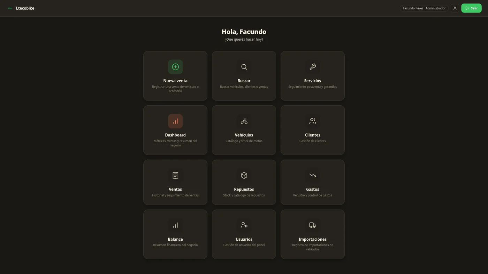

Proyecto destacado
Ltecobike — Sistema de Gestión para Movilidad Eléctrica
Sistema interno de gestión desarrollado para una empresa familiar de motos eléctricas. Permite gestionar ventas, stock, clientes, gastos, distribuidores, comisiones y roles de acceso, con catálogo web público sincronizado con el sistema interno.
- Panel administrativo con PHP y MariaDB
- Gestión de ventas, stock, clientes y distribuidores
- Roles de acceso y comisiones diferenciadas
- Catálogo web público sincronizado con el inventario interno
- Despliegue en Rocky Linux con Docker y Cloudflare Tunnel
- Deploy automático de la web pública con GitHub y Cloudflare Pages
